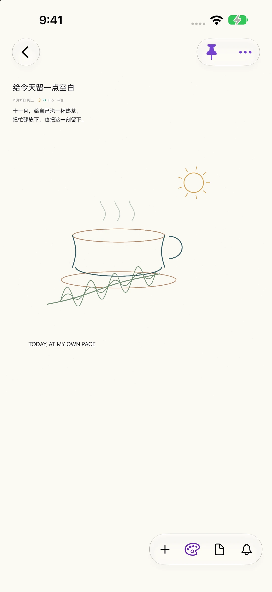

从记录，到回看。
纸张、文字、照片与手写一起组成这一页。按日期与笔记本整理，回到目录时，看见真实纸面留下的缩略图。
常用工具，留在手边。
圆盘按需展开笔刷、颜色与编辑操作。八种笔刷、轻量图层和照片参考，为日常插画留出空间。
保存在本机。
可选本机加密与带密码的完整备份。当前版本未启用 iCloud 同步，更换设备前请先备份。


平台、价格与上线日期以正式商店页面为准。
纸张、文字、照片与手写一起组成这一页。按日期与笔记本整理，回到目录时，看见真实纸面留下的缩略图。
圆盘按需展开笔刷、颜色与编辑操作。八种笔刷、轻量图层和照片参考，为日常插画留出空间。
可选本机加密与带密码的完整备份。当前版本未启用 iCloud 同步，更换设备前请先备份。

平台、价格与上线日期以正式商店页面为准。